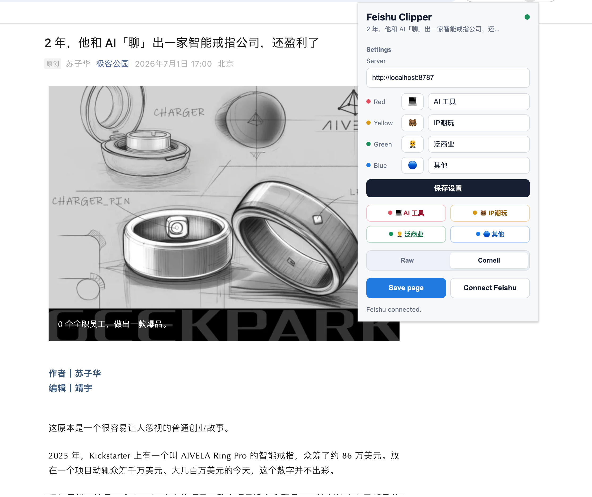
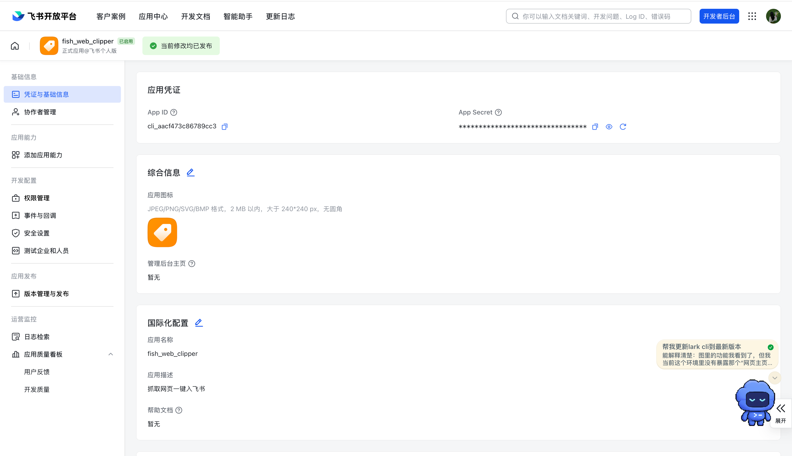
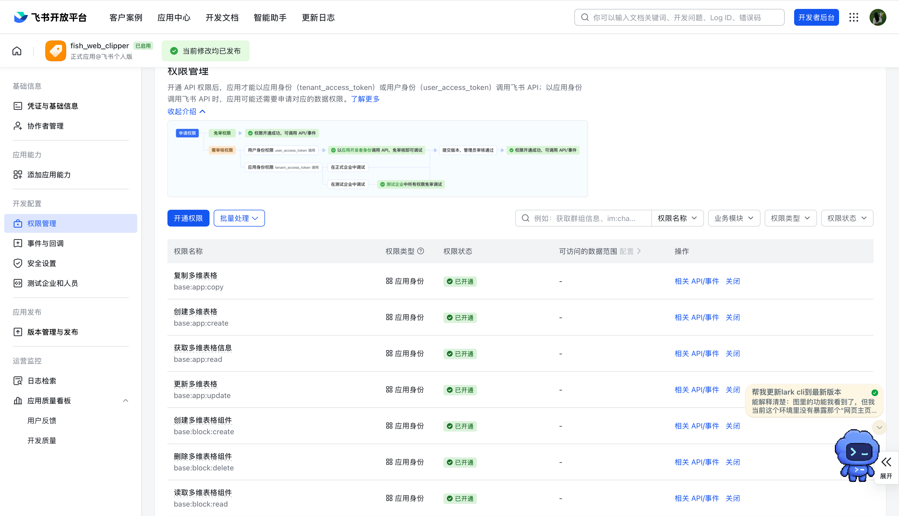
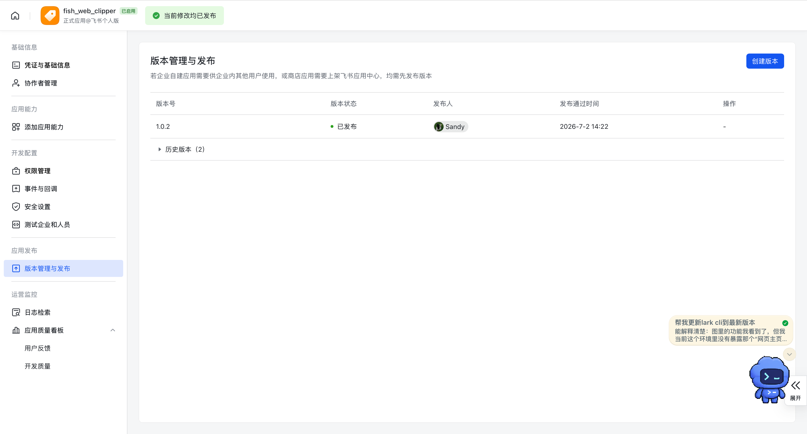
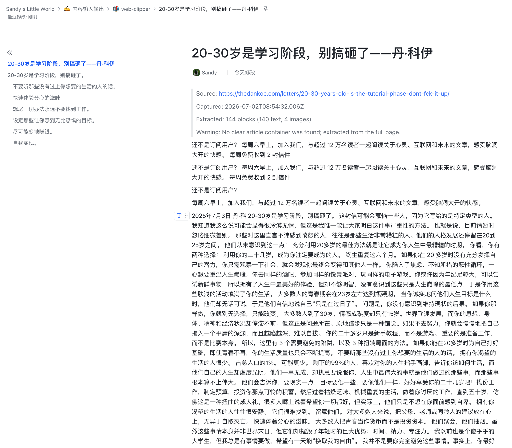
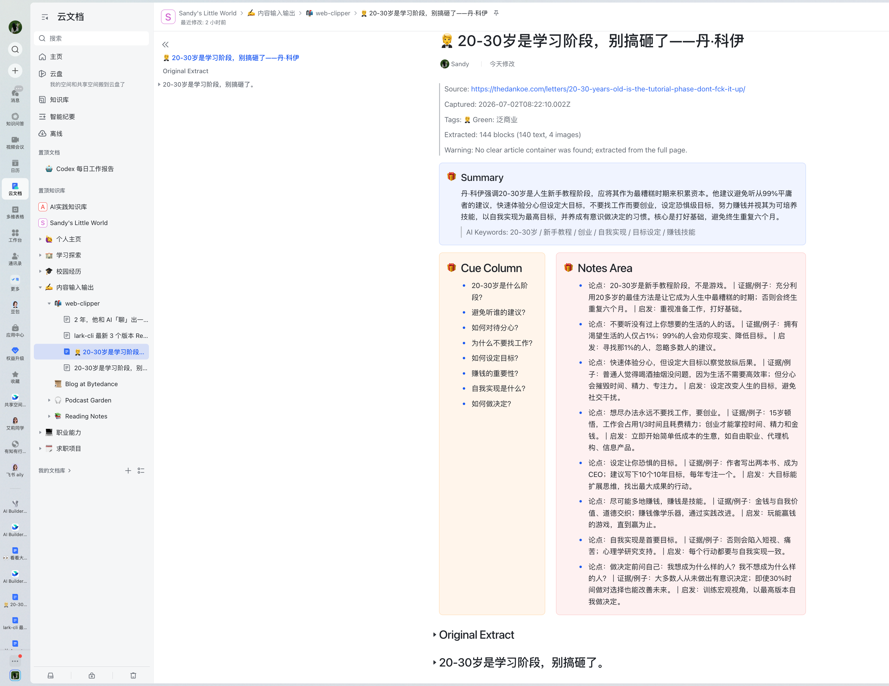
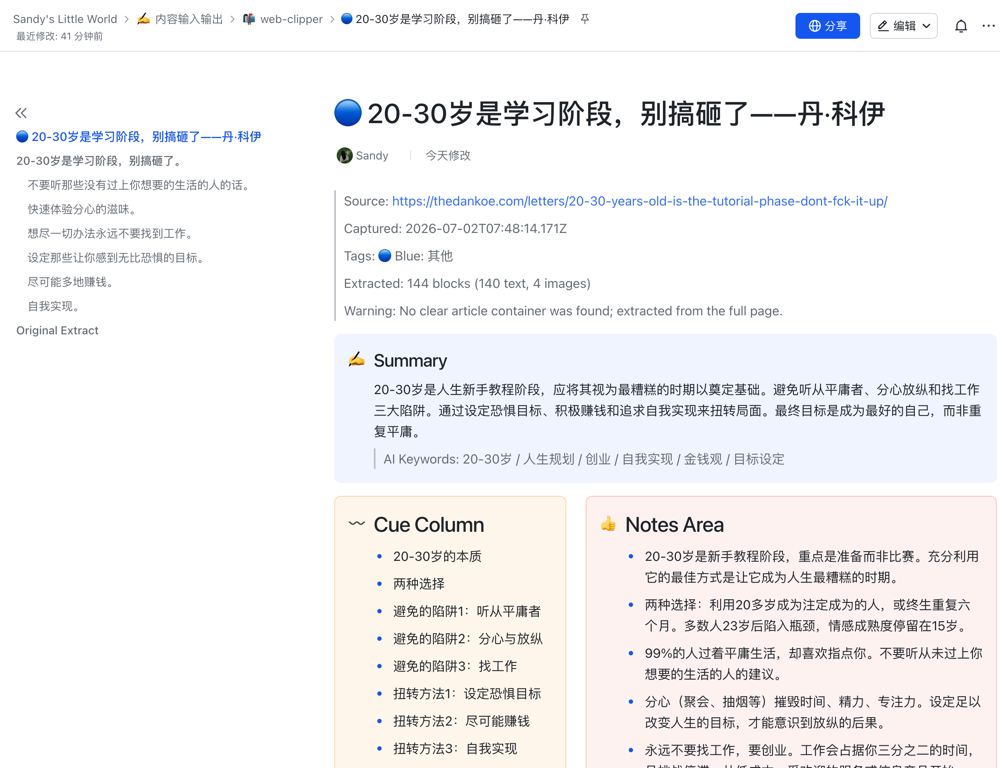

我有一个想法，就是想做一个谷歌插件。只要我一按这个插件按钮，它就会把网页内容转成飞书文档，然后连通到我的知识库，实现一键收藏。
AI：把想法拆成 Chrome 插件、本地后端、飞书 OAuth、知识库写入这几块。
这是一个从真实需求长出来的小工具：浏览网页时点一下 Chrome 插件，就能把内容保存到飞书知识库；如果选择 Cornell 模式，它还会调用 DeepSeek，把文章整理成 Summary、Cue Column 和 Notes Area。

我平时会看到很多值得收藏的网页，但如果只是丢进收藏夹，过几天就很难再被用起来。所以我想做一个工具：把网页直接变成飞书知识库里的结构化笔记。
你不需要先懂代码。先把整个系统想成一个小团队：浏览器插件是前台，后端是办公室，飞书是外部平台，DeepSeek 是整理笔记的帮手。
像一个安装在浏览器里的小遥控器。你点一下，它就知道“我要保存当前网页”。
像一个只在你电脑上运行的小办公室。它保存密钥、处理授权、调用 API。
飞书负责创建文档和知识库；DeepSeek 负责把文章整理成康奈尔笔记。
它运行在网页里面，负责把页面正文拿出来。你可以把它想成一个自动复制重点内容的人。
OAuth 像临时通行证。你登录飞书授权后，后端拿到 token，用 token 替你创建文档。
插件不会“手动点飞书按钮”。它是把请求发给飞书 API，让飞书按规则创建文档。
飞书不是随便让程序创建文档的。你需要创建一个飞书开放平台应用，告诉飞书：这个应用是谁、回调到哪里、要哪些权限、是否已经发布。
App ID 像应用的名字，App Secret 像应用的私钥。它们只能放在后端 `.env` 里，不能放进 Chrome 插件。

本项目主要需要创建 Docx、读取知识库、移动文档到知识库。少一个权限，就可能出现 Unauthorized 或缺 scope 的报错。
docx:document:create 创建新版文档docx:document 写入和编辑文档内容wiki:node:read / wiki:node:retrieve 读取知识库节点wiki:node:move 把文档移动到知识库offline_access 让授权可以刷新，不用频繁重新登录
飞书开放平台的配置不是改完马上对用户生效。你改了权限、重定向 URL、应用信息后，需要创建版本并发布。然后还要重新授权一次。

Raw 和 Cornell 解决的是不同需求：一个是“先原样收藏”，一个是“收藏时顺便整理成笔记”。
Raw 模式不会调用 DeepSeek，也不会生成 Summary、Cue Column 或 Notes Area。它更像“把网页正文搬进飞书”。

Cornell 模式会把正文发给 DeepSeek，让它生成 Summary、Cue Column、Notes Area 和关键词，再由后端写成飞书双栏排版。

你要的不是“简单保存”，而是“保存时顺手变成可复习的知识”。这就是 Cornell 模式的价值。

看代码不用一上来就全读。先知道每个文件是哪个部门，就不会迷路。
| 文件 | 大白话职责 | 它解决的问题 |
|---|---|---|
extension/manifest.json |
插件身份证 | 告诉 Chrome：这个插件叫什么、需要哪些权限、弹窗文件在哪里。 |
extension/content.js |
网页阅读员 | 进入当前网页，提取标题、正文、图片链接和选中文字。 |
extension/popup.js |
插件控制台 | 处理按钮、tag、emoji、Raw / Cornell 模式、进度条和保存请求。 |
server/src/index.js |
后端接待台 | 提供健康检查、飞书授权入口、保存网页 API。 |
server/src/larkClient.js |
飞书沟通员 | 负责 OAuth、创建文档、写入块、移动到知识库。 |
server/src/summarizer.js |
AI 笔记整理员 | 把网页正文发给 DeepSeek，拿回 Cornell Notes JSON。 |
server/src/docBlocks.js |
飞书排版师 | 把普通网页内容或 Cornell Notes 转成飞书 Docx blocks。 |
.env |
本地保险柜 | 保存 App Secret、DeepSeek Key、知识库 ID。这个文件不应该上传 GitHub。 |
虽然你说自己是小白，但这个项目已经覆盖了一条完整产品链路。
“一键收藏”被拆成提取网页、授权飞书、创建文档、移动知识库、AI 整理这几步。
App Secret 和 API Key 不能放插件里，要放在本地后端 `.env`。
Unauthorized、missing scope、redirect URL 错误，本质都是配置和权限问题。
先让功能跑通，再逐步优化图片、进度条、链接、tag、Cornell 布局。
你不只要“能用”，还在意保存进度、文档标题、emoji、知识库目录和 README。
你把代码推到 GitHub，又把使用说明和截图补到 README，这已经是项目交付意识。
下面保留你的原话；AI response 做了压缩，只记录当时给出的反馈、判断或执行结果。
我有一个想法，就是想做一个谷歌插件。只要我一按这个插件按钮，它就会把网页内容转成飞书文档，然后连通到我的知识库，实现一键收藏。
AI：把想法拆成 Chrome 插件、本地后端、飞书 OAuth、知识库写入这几块。
你开始搭建吧
AI：开始创建 Manifest V3 插件、Express 后端、飞书 API client 和基础 README。
我加载这个谷歌浏览器的这个目录
AI：指导加载 `extension` 文件夹，而不是整个项目根目录。
OK，我已经创好了 App ID 以及它的真实 App Secret，我应该如何填入？
AI：说明填入 `.env` 的 `LARK_APP_ID` 和 `LARK_APP_SECRET`，不要写进前端插件。
终端我如何用快捷键打开新的一页呢？
AI：解释常见终端新标签快捷键，以及也可以直接开新窗口运行 server。
我已经填好了 ID 和 App Secret。关于知识库方面的两个信息，我应该是获取什么样子的两个信息呢？
AI：解释需要知识库 space id 和父节点 token，父节点 token 通常来自 wiki 链接。
https://my.feishu.cn/wiki/NMM2wL8QBi4aamkMzXhcxCPnn4e?from=from_copylink 比如说我想存到这一个目录页上面这个链接是对应的哪个呀？是那个复节点 token 第二个吗？
AI：指出 URL 里的 `NMM2...` 就是可用的父节点 token。
OK，我现在都已经写入了 你帮我检查一下
AI：检查本地配置、服务状态和关键环境变量。
仍然有问题啊
AI：根据截图判断是 redirect URL 配置问题，指导去飞书后台安全设置添加回调地址。
我是需要在这里填什么吗？
AI：确认需要填写 `http://localhost:8787/auth/lark/callback` 作为重定向 URL。
Feishu API error on /open-apis/docx/v1/documents: Unauthorized... 应用未获取所需的用户授权...
AI：判断缺少 `docx:document` 和 `docx:document:create` 用户授权，需要补权限并重新授权。
wiki:node:write 我没有做权限里面看到这
AI：说明不一定叫 `wiki:node:write`，要按实际 API 需要开 wiki 节点读取和移动相关权限。
这些全新够了吗
AI：对照截图判断 wiki 权限大体够，但还要看 Docx 权限和重新授权。
不对呀，仍然是这个说明没有
AI：解释权限开通后还要发布版本和重新 OAuth，旧 token 不会自动拥有新权限。
Feishu API error on /open-apis/docx/v1/documents/.../children?document_revision_id=1: invalid param
AI：定位为写入 Docx block 参数不对，后续调整飞书 block 写入格式。
我发现现在存入飞书的图片是一个链接。你能不能帮我直接存一个图片，而不是一个图片链接？
AI：尝试评估图片上传，但发现网页图片复杂，上传会带来稳定性和权限成本。
我觉得还是不行，有些图片其实是没用的。这样吧，你还是回归原来的版本。图片链接仍然保持为链接，但是必须加一小段描述图片内容的文字，你可以用括号写在图片链接后面。
AI：回退图片上传，保留图片链接，并在链接后追加 alt/title/caption 描述。
OK，现在有一个问题，我发现提取网页的内容并不完整，这是提取的内容... 而这是原内容...
AI：优化网页正文提取逻辑，尤其是微信公众号页面和更长正文的提取上限。
OK，现在希望你以第一性原理的原则，去重新审查这样的一个插件。看看什么地方可以优化
AI：从可靠性、权限、安全、体验、内容质量几个维度重新审查插件。
那你觉得应该做什么样的改动？把你觉得应该要做改动的地方直接进行修改
AI：直接优化提取、错误提示、链接返回、token 存储和文档结构。
OK，我希望在 Google 插件那个地方你再做一些优化：存储显示用百分比；Save to 飞书之后打开链接 404；Server 显示网址不好可以隐藏。
AI：加了百分比进度条，修复 Feishu URL，隐藏 server 设置到 Settings 区域。
我不希望内容存入飞书时只是很简单地存入，能不能在飞书云文档上方加一个飞书的画板功能？比如稍微总结一下内容之类的。这个你能实现吗？是需要通过 Codex 实现，还是说你觉得这样耗费 Token 太多了？
AI：解释可以做总结，但先从文本总结 MVP 开始，比直接画板更稳定。
我觉得能不能在谷歌插件弹出的那个窗口里加几个 tag？比如最开始先设计成红、黄、蓝、绿四个颜色，然后让用户自己去添加每个颜色代表的含义。
AI：实现四个颜色 tag，支持用户自定义 label。
然后它保存的飞书文档里的标题 logo 也是对应的 emoji 颜色，就是一个粉色圆圈、蓝色圆圈
AI：在文档标题前加入所选 tag 的 emoji。
我说的不是这边，我是在“飞书文档”有一个添加图标emoji 的那个地方加
AI：解释飞书文档原生图标设置 API 不稳定，于是先采用标题前 emoji 方案。
OK，如果是这样的话，那就继续在“标题”前加 emoji 吧。然后关于 emoji，要能让用户在插件那个地方，自己设置相关的 emoji 和 tag
AI：把 tag 设置扩展为 emoji + label 输入框。
我是说想在 Chrome 插件的那个页面可以自己修改，就是那几个 tag，你能不能弄成那种挖空可以让用户自己填的，然后再加一个“保存设置”的按钮？
AI：加入可编辑 tag 表单和“保存设置”按钮，设置保存在 Chrome storage。
我觉得挺好，现在我再给你一个新功能的思路，你看看能不能做。你知道康奈尔笔记法吗？...
AI：介绍康奈尔笔记法，并判断适合做成 Raw / Cornell 两种保存模式。
OK，那我输入一个 DeepSeek 的 API，你可以先试着做一个 MVP 版本。关于这个 API，你可以告诉我在哪里记，我把内容给你
AI：让用户把 DeepSeek Key 写入 `.env`，不放到前端插件。
OK了 你检查一下是否可以连成功DeepSeek
AI：测试 DeepSeek API 连接是否返回正常。
你再check一下
AI：再次确认 DeepSeek 请求成功。
OK，那你现在帮我做这个 MVP 吧
AI：实现 Cornell 模式，后端调用 DeepSeek 生成 Summary、Cue、Notes、tags。
你可以根据我调整过的这个文档排布布局，能不能都做成这个样式的？如果选的是康奈尔笔记法的话。同时你需要做的就是Notes Area，你是怎么提炼总结的？
AI：读取你的飞书样本文档，复刻 Summary callout + Cue/Notes 双栏，并把 Notes Area 改成“论点｜证据/例子｜启发”。
OK，那我现在可以重新登录这个插件吗？
AI：确认后端运行，给出重新授权链接。
我需要再跑一个 server 吗？
AI：检查 `localhost:8787/health`，确认 server 已经在跑，不需要再开一个。
你可以把我这一段推到我的 GitHub 上吗？可以新建一个仓库
AI：初始化本地 git，确认不提交密钥，指导创建 GitHub 仓库并推送。
不对，我是登录ChenSixing123 账号
AI：把本地 commit 作者改为 ChenSixing123。
ChenSixing123/cornell_feishu_web_clipper
AI：把本地仓库 remote 指向该 GitHub 仓库，合并远程 README 后推送成功。
能不能在 README 再详细写一下，如果别人要用我这个应该怎么做？是如何下载，还是直接把这个仓库的文件存下来？
AI：重写 README，补充 clone、Download ZIP、飞书配置、DeepSeek、Chrome 加载和常见问题。
加一些图片到readme中，放到对应位置
AI：把插件弹窗、Cornell 输出、Raw 输出、Original Extract 等截图加入 README。
Raw模式应该是这个图！前面上一轮对话中我截给你的那3个图都是 康奈尔 模式的！
AI：纠正 README 中 Raw 示例图，替换为真正 Raw 输出截图。
这4张图分别对应下面4点：补充飞书开发者后台截图；补充权限管理截图；每次修改完都需要发布；Cornell 模式说明下加图。
AI：按四个指定位置插入飞书后台、权限、发布、Cornell 区域截图，并推送 GitHub。
其实我是一个不懂代码的小白，但在做这个插件的过程中，我觉得很有成就感，也学到了很多。你能不能给我生成一个 HTML 网站，教教我中间的一些技术原理是什么样的？请用大白话跟我说说，我这一个项目到底是怎么做出来的。然后再附上一个我跟你的所有对话的 prompt。我输入的东西你可以用原话，你的 feedback（也就是 AI response）可以精简一下。我想要一个我跟你对话的全过程。
AI：生成本页面，把技术原理、项目结构、学习收获和完整对话时间线整理成一个可打开的 HTML 网站。
这个项目已经是一个可用 MVP。下一步可以从“个人工具”进化成“更可靠的产品”。
接入 Mozilla Readability 或专门适配更多网站，让正文提取更完整。
除了 Cornell，还可以加入“商业案例拆解”“产品分析”“读书笔记”等模板。
把本地 server 迁移到云端，但要重新设计密钥、token 和用户隔离。